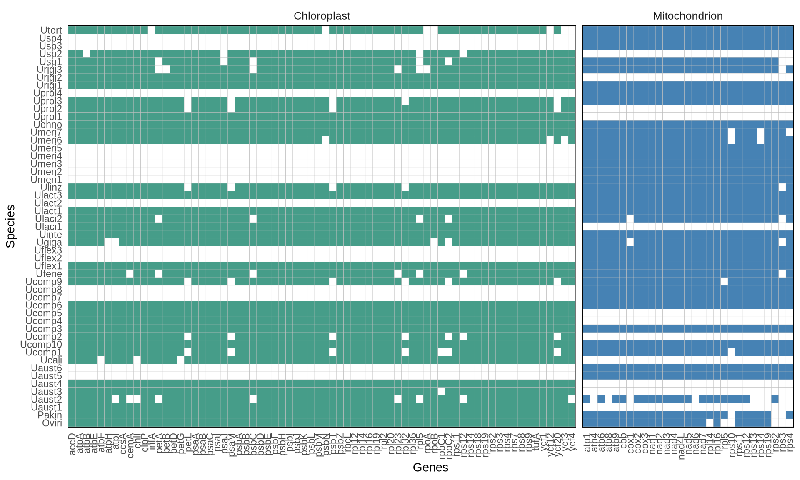
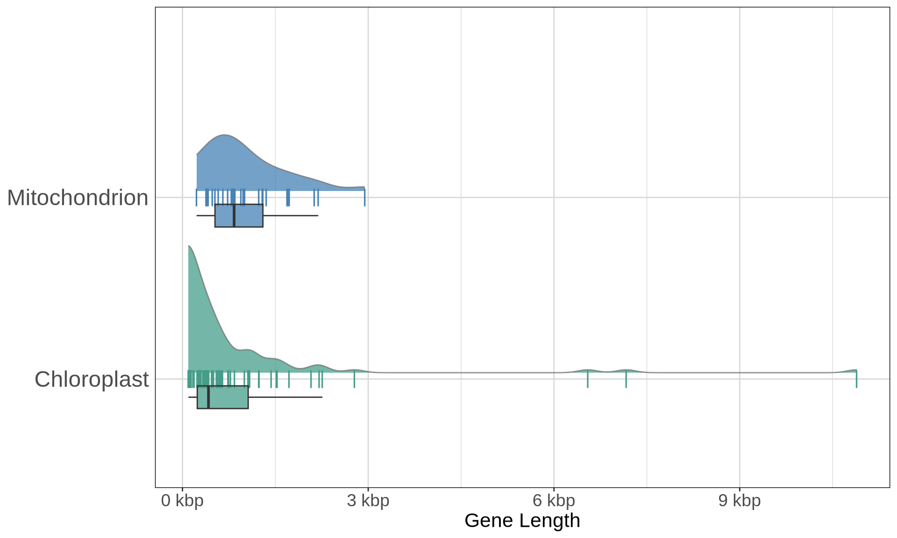

1 Species tree reconstruction from organellar genomes
1.1 On this page
Biological insights and take-home messages are at the bottom of the page at Lesson Learnt: Section 1.4.
- Here we retrieve Ulva organellar genomes
- we investigate the
1.2 Dataset overview
1.2.1 Dataset retrieval
We included the following species, that as for 2022 where the most comprehensive list of cp and mt complete genomes published for Ulva.
Oltmassiellopsis viridi and Pseudendoclonium akinetum were used as an outgroup to root the phylogenetic three.
Organellar genome sequences and gene models were retrieved from NCBI, and corrected where necessary.
1.2.2 Gene occupancy
The gene matrix occupancy and gene length distribution across organellar genomes included in this study are presented below. Most selected genes are present/ nearly present in all studied sequences. In 29 selected genes for mitochondrial, there are two genes, rps3 and rps4 that are not presented in more than 10% of the 37 mt genomic sequences. For chloroplast, there are 10 out of 70 genes not presented in more than 10% of the 34 cp genomic sequences.
Code
# read tables
cp_mt_genes_occupancy = read.delim("./data/cp_mt_genes_occupancy.tab")
# drop last line which is uninformative
cp_mt_genes_occupancy = head(cp_mt_genes_occupancy, -1)
# format headers
colnames(cp_mt_genes_occupancy) = stringr::str_remove_all(colnames(cp_mt_genes_occupancy), ".aln.fa")
colnames(cp_mt_genes_occupancy) = stringr::str_replace_all(colnames(cp_mt_genes_occupancy), "X..Sequences", "Species")
# melt and clean
cp_mt_genes_occupancy = reshape2::melt(cp_mt_genes_occupancy)
cp_mt_genes_occupancy$organell = ifelse(
stringr::str_detect(cp_mt_genes_occupancy$variable, "_cp_CDS_"),
"Chloroplast",
"Mitochondrion"
)
cp_mt_genes_occupancy$variable = stringr::str_remove_all(cp_mt_genes_occupancy$variable, "X02_cp_CDS_align.")
cp_mt_genes_occupancy$variable = stringr::str_remove_all(cp_mt_genes_occupancy$variable, "X02_mt_CDS_align.")
# set different number to assign different color to mitochondrial genes
cp_mt_genes_occupancy$value = ifelse(
cp_mt_genes_occupancy$value == 1 & cp_mt_genes_occupancy$organell == "Mitochondrion",
2,
cp_mt_genes_occupancy$value
)
cp_mt_genes_occupancy$value = as.character(cp_mt_genes_occupancy$value)
# plot
p1 = ggplot(cp_mt_genes_occupancy) +
geom_tile(aes(x = variable, y = Species, fill = value), color = "grey75") +
scale_fill_manual(values = c("white", "#469d89", "steelblue")) +
facet_grid(~organell, scales = "free", space = "free_x") +
labs(x = "Genes",
y = "Species") +
theme(plot.title = element_text(size = 24, hjust = 0.5),
axis.ticks.x = element_blank(),
axis.ticks.y = element_blank(),
axis.text.x = element_text(angle = 90, hjust = 1, vjust = 0.5),
legend.position = "none",
panel.background = element_blank(),
panel.border = element_rect(colour = "black", fill = NA),
strip.background = element_rect(colour = "NA", fill = "NA"),
strip.placement = "outside",
strip.text = element_text(size = 10, angle = 0, vjust = 0.5, hjust = 0.5))
plot(p1)
1.2.3 Gene alignments distributions
Next, we retrieved the CDS sequences and we align them. To do so, first we extract all CDSs that are longer than 200 bp from the .fasta .gff files pairs for each organellar genome.
Code
# get CP genes list
cut -f 9 00_cp_GenBank_RAW/*.gff \
| sed "s/Name=//g" \
| sed "s/ .*//g" \
| grep "accD\|atp\|ccsA\|cemA\|chlI\|clpP\|ftsH\|infA\|pafI\|pbf1\|pet\|psa\|psb30\|psb\|rbcL\|rnl\|rns\|rpl\|rpo\|rps\|rrn5\|tufA\|ycf" \
| sort -u \
> cp_gene_list.lst
# extract CP fasta sequences
while read GENE; do
for file in 00_cp_GenBank_RAW/*[0-9].fasta; do
grep $GENE $(basename $file .fasta).cds.gff > tmp.gff;
bedtools getfasta -fi $file -bed tmp.gff | tr ":" " ";
done > 01_cp_CDS/$GENE.fa;
rm tmp.gff;
done < cp_gene_list.lst
# get MT genes list
cut -f 9 00_mt_GenBank_RAW/*.gff \
| sed "s/Name=//g" \
| sed "s/ .*//g" \
| sed "s/ATP/atp/g" \
| sed "s/NAD/nad/" \
| grep "atp\|cob\|cox\|nad\|rpl\|rps" \
| sort -u \
> mt_gene_list.lst
# extract MT fasta sequences
while read GENE; do
for file in 00_mt_GenBank_RAW/*[0-9].fasta; do
grep $GENE $(basename $file .fasta).cds.gff > tmp.gff;
bedtools getfasta -fi $file -bed tmp.gff | tr ":" " ";
done > 01_mt_CDS/$GENE.fa;
rm tmp.gff;
done < mt_gene_list.lstWe will use faTrans to translate the nucleotidic sequences to the corresponding amino-acid sequences, MAFFT to align the amino-acid sequences for each gene, and finally pal2nal to translate the alignemts back at the nucleotidic level. We will do this both for the chloroplast and for the mitochondrial genes.
Code
# translate CP to amino-acid sequences
for file in 01_cp_CDS/*.fa; do
~/bin/faTrans $file 02_cp_CDS_align/$(basename $file .fa).aa.fa;
done
# translate MT to amino-acid sequences
for file in 01_mt_CDS/*.fa; do
~/bin/faTrans $file 02_mt_CDS_align/$(basename $file .fa).aa.fa;
done
# align amino-acid sequences
ls ./02_cp_CDS_align/ \
| xargs -n 4 -P 8 -I {} sh -c \
'mafft \
--localpair \
--maxiterate 1000 \
--ep 0.123 \
--thread 4 \
./02_cp_CDS_align/{} \
> ./02_cp_CDS_align/$(basename {} .aa.fa).aa.aln.fa'
ls ./02_mt_CDS_align/ \
| xargs -n 4 -P 8 -I {} sh -c \
'mafft \
--localpair \
--maxiterate 1000 \
--ep 0.123 \
--thread 4 \
./02_mt_CDS_align/{} \
> ./02_mt_CDS_align/$(basename {} .aa.fa).aa.aln.fa'
# translate back the alignments to codons
for file in ./02_cp_CDS_align/*.aa.aln.fa; do
perl ~/bin/pal2nal.v14/pal2nal.pl \
$file \
./01_cp_CDS/$(basename $file .aa.aln.fa).fa \
-output fasta \
> ./02_cp_CDS_align/$(basename $file .aa.aln.fa).fa;
done
for file in ./02_mt_CDS_align/*.aa.aln.fa; do
perl ~/bin/pal2nal.v14/pal2nal.pl \
$file \
./01_mt_CDS/$(basename $file .aa.aln.fa).fa \
-output fasta \
> ./02_mt_CDS_align/$(basename $file .aa.aln.fa).fa;
done
# clean up
rm ./02_cp_CDS_align/*.aa.fa \
./02_mt_CDS_align/*.aa.fa \
./02_cp_CDS_align/*.aa.aln.fa \
./02_mt_CDS_align/*.aa.aln.faLet’s now fetch the length of the alignments in R.
Code
# create gene distribution matrix
gene_length_distributions = matrix(ncol = 2)
# get cp length distributions
filenames = list.files(
"./02_cp_CDS_align/",
pattern = "*.aln.fa",
full.names = TRUE
)
cp_genes_length = lapply(filenames, n.readLines, n = 1, skip = 1)
names(cp_genes_length) = stringr::str_remove_all(filenames, "./02_cp_CDS_align//") %>%
stringr::str_remove_all(".aln.fa")
for(i in 1:length(cp_genes_length)){
gene_length_distributions = rbind(gene_length_distributions, c("cp", nchar(cp_genes_length[[i]][[1]])))
rownames(gene_length_distributions)[nrow(gene_length_distributions)] = names(cp_genes_length)[i]
}
# get mt length distributions
filenames = list.files(
"./02_mt_CDS_align/",
pattern = "*.aln.fa",
full.names = TRUE
)
mt_genes_length = lapply(filenames, n.readLines, n = 1, skip = 1)
names(mt_genes_length) = stringr::str_remove_all(filenames, "./02_mt_CDS_align//") %>%
stringr::str_remove_all(".aln.fa")
for(i in 1:length(mt_genes_length)){
gene_length_distributions = rbind(gene_length_distributions, c("mt", nchar(mt_genes_length[[i]][[1]])))
rownames(gene_length_distributions)[nrow(gene_length_distributions)] = names(mt_genes_length)[i]
}
# reformat table
gene_length_distributions = as.data.frame(gene_length_distributions)
gene_length_distributions = gene_length_distributions[-1, ]
names(gene_length_distributions) = c("Organell", "length (bp)")
gene_length_distributions$`length (bp)` = as.numeric(gene_length_distributions$`length (bp)`)And let’s plot the gene alignment distributions for the chloroplast and the mitochondrion.
Code
# plot
p2 = ggplot(gene_length_distributions, aes(x = Organell, y = `length (bp)`, fill = Organell)) +
geom_point(aes(group = Organell, color = Organell), shape = "|", size = 5) +
geom_boxplot(aes(fill = Organell), alpha = 0.75, width = 0.125,
position = position_nudge(x = -0.1),
outlier.colour = NA) +
ggdist::stat_halfeye(aes(fill = Organell), alpha = 0.75, slab_color = "grey45", slab_size = 0.5,
scale = 0.7, adjust = 1, justification = -0.05, .width = 0, point_colour = NA) +
scale_color_manual(values = c("#469d89", "steelblue")) +
scale_fill_manual(values = c("#469d89", "steelblue")) +
scale_y_continuous(labels = label_number(suffix = " kbp", scale = 1e-3)) +
coord_flip() +
labs(y = "Gene Length") +
theme(plot.title = element_text(size = 24, hjust = 0.5),
axis.ticks.y = element_blank(),
axis.title.x = element_text(size = 16),
axis.title.y = element_blank(),
axis.text.x = element_text(size = 14),
axis.text.y = element_text(size = 18),
legend.position = "none",
panel.background = element_blank(),
panel.grid.major = element_line(colour = "grey85"),
panel.grid.minor.x = element_line(colour = "grey85"),
panel.border = element_rect(colour = "black", fill = NA))
plot(p2)
1.3 Reconstruction of Ulva species tree
We will reconstruct the Ulva phylogenetic species tree using a Maximum Likelihood approach with IQ-TREE, and a coalescence-based one with ASTRAL. We will generate the species tree based on:
- chloroplast only genes
- mitochondrial only genes
- both chloroplast and mitochondrial genes
and we will evaluate the similarities and differences between the reconstructued phylogenies.
1.4 Lessons Learnt
So far, we have learnt:
- TCGA is a public resource with a wide collection of samples from cancer biopsies from patients affected by 32 different cancer types.
- TCGA provides abundant molecular and clinical information for both biopsies and patients and it allows for patient stratification and therapeutic target discovery.
- Cancers with kidneys as primary sites are the third most abundant samples available in TCGA (n = 1,030 samples), after breast (n = 1,246) and lung biopsies (n = 1,156), and provides an excellent yet challenging case-study.
1.5 Session Information
Note
R version 4.3.2 (2023-10-31)
Platform: x86_64-conda-linux-gnu (64-bit)
Running under: openSUSE Tumbleweed
Matrix products: default
BLAS/LAPACK: /home/andrea/miniforge3/envs/moai/lib/libmkl_rt.so.2; LAPACK version 3.9.0
locale:
[1] LC_CTYPE=en_US.UTF-8 LC_NUMERIC=C
[3] LC_TIME=it_IT.UTF-8 LC_COLLATE=en_US.UTF-8
[5] LC_MONETARY=en_US.UTF-8 LC_MESSAGES=en_US.UTF-8
[7] LC_PAPER=en_US.UTF-8 LC_NAME=C
[9] LC_ADDRESS=C LC_TELEPHONE=C
[11] LC_MEASUREMENT=en_US.UTF-8 LC_IDENTIFICATION=C
time zone: Europe/Brussels
tzcode source: system (glibc)
attached base packages:
[1] parallel stats4 grid stats graphics grDevices utils
[8] datasets methods base
other attached packages:
[1] treeio_1.26.0 TreeDist_2.9.2 stringr_1.5.1
[4] scales_1.3.0 RColorBrewer_1.1-3 reshape_0.8.9
[7] phytools_2.4-4 maps_3.4.2.1 phylogram_2.1.0
[10] phangorn_2.12.1 gridExtra_2.3 ggtree_3.10.1
[13] ggplot2_3.5.1 ggdist_3.3.2 dplyr_1.1.4
[16] doSNOW_1.0.20 snow_0.4-4 iterators_1.0.14
[19] foreach_1.5.2 dendextend_1.19.0 DECIPHER_2.30.0
[22] RSQLite_2.3.9 Biostrings_2.70.3 GenomeInfoDb_1.38.8
[25] XVector_0.42.0 IRanges_2.36.0 S4Vectors_0.40.2
[28] BiocGenerics_0.48.1 corrplot_0.95 ComplexHeatmap_2.18.0
[31] circlize_0.4.16 ape_5.8-1
loaded via a namespace (and not attached):
[1] jsonlite_1.8.9 shape_1.4.6.1 magrittr_2.0.3
[4] farver_2.1.2 rmarkdown_2.29 GlobalOptions_0.1.2
[7] fs_1.6.5 zlibbioc_1.48.2 vctrs_0.6.5
[10] memoise_2.0.1 RCurl_1.98-1.16 htmltools_0.5.8.1
[13] distributional_0.5.0 DEoptim_2.2-8 gridGraphics_0.5-1
[16] sass_0.4.9 bslib_0.8.0 htmlwidgets_1.6.4
[19] plyr_1.8.9 cachem_1.1.0 igraph_2.1.4
[22] mime_0.12 lifecycle_1.0.4 pkgconfig_2.0.3
[25] Matrix_1.6-5 R6_2.5.1 fastmap_1.2.0
[28] GenomeInfoDbData_1.2.11 rbibutils_2.3 shiny_1.10.0
[31] clue_0.3-66 digest_0.6.37 numDeriv_2016.8-1.1
[34] aplot_0.2.4 colorspace_2.1-1 patchwork_1.3.0
[37] crosstalk_1.2.1 labeling_0.4.3 clusterGeneration_1.3.8
[40] compiler_4.3.2 bit64_4.6.0-1 withr_3.0.2
[43] doParallel_1.0.17 optimParallel_1.0-2 viridis_0.6.5
[46] DBI_1.2.3 R.utils_2.12.3 MASS_7.3-60.0.1
[49] rjson_0.2.23 scatterplot3d_0.3-44 tools_4.3.2
[52] httpuv_1.6.15 TreeTools_1.13.0 R.oo_1.27.0
[55] glue_1.8.0 quadprog_1.5-8 nlme_3.1-167
[58] R.cache_0.16.0 promises_1.3.2 reshape2_1.4.4
[61] cluster_2.1.8 PlotTools_0.3.1 generics_0.1.3
[64] gtable_0.3.6 R.methodsS3_1.8.2 tidyr_1.3.1
[67] pillar_1.10.1 yulab.utils_0.2.0 later_1.4.1
[70] lattice_0.22-6 bit_4.5.0.1 tidyselect_1.2.1
[73] knitr_1.49 xfun_0.50 expm_1.0-0
[76] matrixStats_1.5.0 DT_0.33 stringi_1.8.4
[79] lazyeval_0.2.2 ggfun_0.1.8 yaml_2.3.10
[82] evaluate_1.0.3 codetools_0.2-20 tibble_3.2.1
[85] ggplotify_0.1.2 cli_3.6.3 xtable_1.8-4
[88] Rdpack_2.6.2 jquerylib_0.1.4 munsell_0.5.1
[91] Rcpp_1.0.14 coda_0.19-4.1 png_0.1-8
[94] blob_1.2.4 bitops_1.0-9 viridisLite_0.4.2
[97] tidytree_0.4.6 purrr_1.0.2 crayon_1.5.3
[100] combinat_0.0-8 GetoptLong_1.0.5 rlang_1.1.5
[103] fastmatch_1.1-6 mnormt_2.1.1 shinyjs_2.1.0